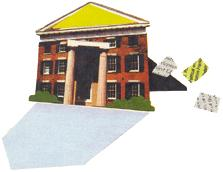
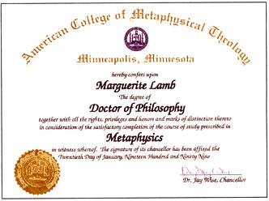

The pros, cons, and con artists in the distance education business.
Some years after Marina Bear and her family built their rural home on a plot of land outside of Mendocino, California, the then 40-something-year-old mother of three decided it was time to go back to school. "I suddenly realized that my twins were 13 years old and they really didn't need a full-time mom anymore," she recalls.
Having earned her bachelor's degree 15 years earlier, Marina set her sights on the next level: a master's degree. There was just one problem. The closest institute of higher learning was located a three hour's drive down a long and winding country road. Moreover, it was a small community college with little to offer a bright and aspiring graduate student. "They weren't doing much of anything that would make me want to drive back and forth a whole lot," says Marina. "Still, I just knew that out there, some where, there had to be a place that could help me further my quest."
That place turned out to be California State University Dominguez Hills (CSUDH), a school located more than 600 miles from the Bears' homestead. "But it could have been 6,000 miles for all that it mattered," remarks Marina's husband John Bear. "She literally never had to leave the house to get her degree."
Marina completed her master's degree in 1987, never having stepped foot in a CSUDH classroom. Her entire course of study was completed at a distance, a phenomenon that is becoming increasingly common, particularly as old-model, snail-mail correspondence courses give way to a plethora of interactive multimedia and electronic options.
"Distance education has become part of the mainstream," says John Bear. And he should know: he wrote the book (or rather, books) on the subject. An internationally recognized expert on the topic of distance education, Bear is coauthor, along with his daughter Mariah, of College Degrees By Mail & Modem and Bears' Guide to Earning Degrees Nontraditionally.
"More and more people are beginning to realize," he says, "that you can earn an absolutely usable, regionally accredited degree, without ever leaving home."
To date, more than 100 million Americans have studied through distance education, including Abraham Lincoln, Franklin D. Roosevelt, Walter P. Chrysler, and Walter Cronkite. And let's not forget Jerry Greenfield and Bennett Cohen. That's right, America's coolest entrepreneurs learned to make ice cream through a $5 Penn State correspondence course. After acing the class, the duo opened Ben & Jerry's Homemade Ice Cream Parlor in 1978 in a renovated gas station in Burlington, Vermont. And the rest, as we know, is homemade ice cream history.
According to the most recent National Center for Education Statistics survey, a third of the nation's traditional higher education in stituations offered distance learning courses in 1995 and another quarter planned to have such courses in place by today. At the time of the survey, there were more than 750,000 students enrolled in an estimated 25,730 distance education courses at colleges and universities nationwide. And the numbers-of both students and programs-continue to skyrocket.
"The growth of distance learning, especially that which is Internet-delivered, is going at wildfire rates," says Vicky Phillips, coauthor with Cindy Yager of The Best DistanceLearning Graduate Schools: Earning Your Degree Without Leaving Home (Princeton Review, 1998).
For example, notes Phillips, just ten years ago, there were only 11 graduate-level distance degree programs available nationwide. Yet, by the time she and Yager had finished the research for their guide in February 1998, they had 195 programs to profile. "And right now, if we updated that book, we could profile well over 250 programs."
And that's just the graduate-level degree programs. There are also hundreds of associate and bachelor degree programs, not to mention vocational and trade certificate programs all available by some combination of mail, phone, fax, video, audiotape, teleconferencing, and the Internet. How's a student to choose?
Very carefully. Particularly since aspiring students aren't the only ones taking advantage of the distance ed boom. A slew of scam artists has taken the opportunity to set up fake universities and colleges-so-called diploma mills-that churn out degrees worth little more than the paper they're printed on. The bottom line: it pays to do some homework before you enroll.
Fueling the current wildfire growth of distance learning is the emergence of what's being called the "lifelong learner." College is no longer the exclusive province of the late-teens/early-twenties crowd.
"The typical distance learning college kid is older-average age 37 to 42," notes Vicky Phillips, CEO of Lifelong Learning, a Vermont-based distance education consulting firm. These older students, she adds, are generally seeking an education that will improve their careers or economic standing. Most have had some college experience, and are returning to academia, albeit at a distance, to solve what Phillips describes as "serious access issues."
"Women tend to use [distance learning] more than men," she adds, "because women tend to have both careers and child care responsibilities that make it very hard for them to take time out to commute to a campus location."
With so many options-most legitimate, but some not-it will take time and effort to locate the distance learning program that is right for you. But by following some basic guidelines, you can learn, earn a valuable degree, and avoid potential pitfalls along the way.
"Distance learning places a lot of responsibility on the student, and that starts with shopping around," says John Bear. First, you will need to decide what you want out of a distance education course or program.
• Are you interested in learning for learning's sake, or are you eager to attain a degree?
• Do you hope to later transfer any credits earned to another college or university?
• Will you want your degree to be recognized by current or future employers?
• Would you prefer a highly structured program, or one you design in consultation with a faculty advisor?
• How much are you willing to spend? The courses or degree program you choose will (or should) ultimately depend on how you answer each of these questions.
Once you've decided what you want to learn and why you want to learn it, it's time to zero in on the program that is best tailored to meet your needs. This is where it helps to be an informed consumer.
It is not a good idea to limit your search to classified ads in the backs of magazines, nor should you rely on surfing the Web for an appropriate course or program. There are few to no regulations controlling who can post what on the web, and that includes use of the ".edu" domain (Long the exclusive province of legitimate schools and colleges, until savvy hucksters clued in). "Anyone who has the necessary $70 can register an .edu domain name and use it to archive any type of enterprise on the Internet," warns Phillips, who is also CEO of Lifelong Learning, a Vermont-based firm that helps colleges and corporations to devise educational programs for adult learners.
So where should you look? The aforementioned guides by Phillips and Yager and the Bears are a good place to start. So, too, is another sweeping reference, Peterson's Guide to Distance Learning Programs 1999, which provides details about some 2,000 degree and certificate options available from nearly 900 institutions.
Then there's the Distance Education and Training Council's (DETC) Directory of Accredited Institutions, which profiles the more than 70 schools and programs sanctioned by the DETC's accrediting arm. A Washington-based, nonprofit association, the DETC was founded in 1926 as a clearinghouse for information about distance education. It has the authority to accredit schools offering everything from certificates to master's degrees, though a majority of the programs it recognizes are vocationally or trade-oriented.
While DETC accreditation guarantees a program's legitimacy, keep in mind that credits earned in DETC-recognized programs may not transfer to regionally accredited two- or four-year colleges. If you do plan to take DETC courses with the intention of later transferring the credits or applying to another college for a higher degree, you'd do well to check with that college's registrar in advance.
Currently, more than three million Americans are enrolled in DETC-accredited courses, studying everything from computer programming to desktop publishing to electrical engineering to nutrition science. For a list of DETC-accredited programs, visit the web at www.detc.org, or call (202) 234-5100.
For those who prefer to do their research electronically, Phillips and Yager maintain a mini-guide to valid distance learning colleges on their Lifelong Learning Web site, www.geteducated.com. "We screen all entries, and we do not list diploma mills, though we get a lot of e-mail from [them] asking to be listed at our site. We got seven such requests this week alone."
With new programs cropping up all the time, Phillips and Yager have also launched a free e-mail newsletter, The Virtual University Gazette, to try to keep pace with the distance ed explosion. "The first section of the Gazette, which we post to our Web site each month, contains announcements of new virtual university programs," says Phillips. "We average about 15 new programs each month."
If, after exploring any or all of these resources, you've still got your heart set on a program or course you found through some other less verifiable means, there are still a couple of ways to check out its legitimacy. The registrar's "bible" of recognized educational institutions is a UNESCO publication called the International Handbook of Universities. Published in the U.S. by Stockton Press, it comes with a heavy price tag, $215, so this is not one you'll want to add to your personal library. But most larger libraries and all college and university registrars should have a copy on hand.
Prospective students can also check out specific institutions with the Council for Higher Education Accreditation (CHEA), a private nonprofit organization that acts as coordinator for the many voluntary institutional and programmatic accreditation agencies nationwide. CHEA annually commissions a directory, entitled Accredited Institutions, for Postsecondary Education and compiled by the American Council on Education (ACE), which lists more than 5,000 properly accredited public, private, two- and four-year, and vocational institutions nationwide. Visit CHEA on the Web at www.chea.org, or call (202) 9556126.
You've aced two math courses at a regionally accredited community college, you've successfully completed a half dozen online computer engineering courses through three different distance learning programs, and, thanks to several years spent south of the border, you recently flew through a Spanish language college-level proficiency exam.
All these credits are beginning to add up and suddenly you're thinking: degree. Or maybe: new job. Now the task is to get that employer or admissions officer to take your helter-skelter academic record seriously. This is where the Regents College Credit Bank Service can help.
The nation's first wholly virtual university, Regents College is a recognized innovator in the field of nontraditional education. Its Credit Bank Service is designed for non-Regents College students who have earned academic credits through various means and who wish to have those credits consolidated on a single Regents College transcript.
Students who apply for the Credit Bank Service are asked to forward all official transcripts and test scores that they would like considered for consolidation. Regents College evaluates all submitted materials and will list all credits from: regionally accredited colleges and universities; military, business, and industry education and training programs evaluated and approved for college credit by the American Council on Education (ACE) and the New York State Program on Noncollegiate Sponsored Instruction (PONSI); and ACE-approved examination programs, including the College Level Exam Program (CLEP).
The initial transcript consolidation fee is $200. That covers the cost of the evaluation, completed within ten days after Regents receives your application package, plus a single copy of your transcript, which is mailed directly to you. Thereafter, Regents will update your transcript for an additional $25 per request, and additional copies of your transcript may be obtained for $8 each.
For more information or to obtain an application, call Regents College Credit Bank Service at (518) 484-8500 or visit the Web at www.regents.edu.
Last August, the Louisiana State Attorney General's Office won a court order to shut down Columbia State University, a diploma mill operating out of Metairie, on the outskirts of New Orleans. But for some 15,000 enrolled students, the cavalry arrived too late. Together, they'd already been bilked out of an estimated $15 million over the course of just 16 months, most of which had disappeared along with the school's founder, Ronald Pellar, a convicted felon and the seventh ex-husband of actress Lana Turner.
Columbia State's class rolls included CEOs and accountants, police officers, teachers, government employees, and administrators from most every field. "These were well-meaning people who knew enough to know that they could get a degree at a distance," says John Bear, "but didn't know enough to ask the right questions."
The first question, suggests Bear, that a prospective student should ask of an institution is: Are you accredited, and if so, by whom? Followed closely by: Is your accreditor recognized by the U.S. Department of Education (ED) and/or CHEA?
"There's a common problem that is often perpetuated by the well-meaning media," says Bear. "So many of the more superficial articles, the Reader's Digest -type thing, say, 'Make sure that your school is accredited.' What they don't say-either because they don't know or because. they don't appreciate how important it is-is that there are nearly as many fake accrediting agencies as there are fake schools. The current edition of Bears' Guide lists more than 50 of them."
And more often than not, these bogus accrediting agencies are set up by the very same shysters who set up the diploma mills.
Why would they bother? Because in the U.S., accreditation is the only truly independent guarantee of a school's or program's legitimacy, and so every school (even, or perhaps especially, the phonies) wants to be able to claim accreditation.
It's a problem that is specific to our free-market model of education. Unlike most other countries, the U.S. has no centralized, federal regulatory agency to oversee its postsecondary schools.
And state laws vary widely, making state licensing an unreliable measure of a program's legitimacy. "We've got 50 separate sets of state laws," says John Bear. "They range from the really tough, in places like New York and Pennsylvania, to the absurdly easy, in places like Hawaii, where you pay your $10 licensing fee, make a call to Mail Boxes, Etc. in Honolulu, and by this afternoon you can be operating as Lamb University and selling Ph.D.s-and not illegally, as far as the state of Hawaii is concerned."
From this void of federal and state oversight has emerged over the last half century a system of voluntary self-regulation. Colleges and universities agree to adhere to certain standards and to have their efforts periodically reviewed and accredited by a body of their peers. It is a system meant to assure students, employers, and academic registrars that a given institution satisfies certain minimum quality standards.
Because of this, many colleges and universities will accept transfer credits only from institutions accredited by ED- or CHEA-recognized accrediting agencies. And most employers require their employees to hold degrees from properly accredited institutions, as well.
That said, should you absolutely avoid institutions accredited by unrecognized agencies? Vicky Phillips' answer is unequivocal: "I could start the Phillips' Private Council of College Accreditors tomorrow and begin printing and mailing out my own degrees," she says. "But since I am not a recognized accreditor, the degree I mail to you might look fine on your wall, but ...from a consumer's perspective, you might as well hold a degree from a college accredited by yourself or your mother."
CHEA President Judith Eaton allows a bit more latitude. CHEA, she reminds us, is a voluntary organization, and so accreditors don't have to become members. And the Department of Education, for its part, recognizes only those accreditors with the authority to sanction so-called Title IV schools-those eligible to award federal student grants and loans (though that does include most traditional two- and four-year colleges).
The result, says Eaton, is that a "handful of perfectly fine accreditors" are not officially recognized by either ED or CHEA. But here, too, CHEA can help, says Eaton, since even if an accreditor is not a member, CHEA will usually know whether or not it is legitimate. "People can call us, and we will tell them what we know."
What about schools that claim no accreditation? Though lack of accreditation does not necessarily mean that an institution is bogus, it does place the onus on the student to assess the legitimacy and quality of a school's offerings.
And with literally thousands of properly accredited programs to choose from, sending your hard-won dollars off to an institution with no or suspect accreditation seems an unnecessary and easily avoided risk. Both ED (1-800-USA-LEARN) and CHEA can provide you with a list of recognized accreditors.
A f ew final words on accreditation: While it may ensure that an institution is not a, scam, it does not guarantee that it will meet your personal or professional goals. You will still need to examine the curriculum, as well as talk to faculty and, if possible, students and alumni to make sure that it's right for you.
Also, keep in mind that not all accredited institutions are created equal: Harvard University and your local community college may both be accredited, but that does not mean that both will carry the same weight with employers, nor does it automatically guarantee that the higher-ranking school will accept credits transferred from the lower-ranking school.
And finally, be aware that while there are some specialized national accreditors (DETC, for one) most traditional colleges and universities are regionally accredited. A common ploy on the part of the fake schools is to claim national, or even worldwide, accreditation.
...a school raises more red flags than the fans at Boston's Fenway Park.
While researching this article, MOTHER uncovered this gem of an operation. Read on for a signs-to-watch-for primer that'll leave you better prepared to spot potential trouble.
The classified ad promised degrees of all levels, "granted on basis of experience." It also included a web address: www.heri.com. I visited the site and found myself scrolling down the pages of the Higher Education Research Institute (HERD, which billed itself as a free consumer referral service dedicated to helping prospective students find a suitable "degree-completion" program. The service claimed to be aimed at folks with substantial life or work experience in a given area, who are looking to receive academic degrees for work already done. Based on a preliminary evaluation form, HERI promised to refer students to either the "private, nonprofit university" with which it was "affiliated," or another appropriate academic institution. HERI, incidentally, listed its address as Honolulu, Hawaii.
I called HERI's toll-free number and, as instructed by the recorded voice at the other end of the line, left my name and home mailing address. Days later, I received in response an envelope from the Academic Resource and Referral Center (ARRC) of Louisville, Kentucky. Included in the ARRC packet was a preliminary evaluation form. It was requested that I complete this form, attach a brief statement explaining why I felt I already qualified for the degree I was seeking (a master's degree in journalism), plus include an "informal list" of my past education and employment. I was asked for no supporting documentation (academic transcripts, etc). Within 14 days, I was told, I would be referred to one or possibly two universities "drawn from a pool of more than 500 universities."
Confused yet? Well, believe it or not, I didn't actually notice that the name of the place I contacted was different from the name of the place that sent me materials (that is, that HERI had apparently metamorphosed into ARRC) until after I had mailed off my evaluation form and supporting materials. It also took me a few weeks to realize that my call to Hawaii had prompted information showing a Louisville, Kentucky, return address. And I was keeping an eye out for inconsistencies! But the red flags didn't stop there.
Within a couple of weeks, I received a letter from ARRC informing me that I was indeed qualified to receive a master's degree based on my "extensive life and work experience." (My largely manufactured past, detailed on less than half of an 8 1/2' x 11" page, included a B.A. in English literature and stints at two college papers). My file, I was told, had been forwarded to a place called Hamilton University in Wyoming. If, on the other hand, I chose to actually earn a degree by taking classes, I was welcome to contact my local state college directly.
Soon thereafter, I received my official invitation to enroll at Hamilton, but I had to act fast-the offer was good for only 30 days! This and several other aspects of my enrollment package struck me as unusual:
• I was, for instance, asked to select my preferred method of communication with Hamilton: e-mail, fax, or regular mail.
Telephone communication was not an option, since, I was informed, "it is the least efficient method of academic communication."
• I was told I could request back dating of my diploma. Specifically, the application packet states: "To request Experience Dating a degree candidate should complete the applicable section ...of the enrollment application and indicate the date (month and year) they feel they were first qualified to receive the degree. Such dating cannot be earlier than January 1976."
• Listed as Hamilton's accreditor was the American Council of Private Colleges and Universities, an organization not recognized by either the Council for Higher Education Accreditation or the Department of Education. (see "The Whats and Whys of Accreditation," page 70)
My curiosity piqued, I e-mailed my unnamed faculty advisor at Hamilton University with a list of questions, including one about its unrecognized accreditor. In response, I was informed that Hamilton has the "highest level of accreditation possible for ANY school that is able to grant degrees based wholly or substantially on life and work experience."
I ran this response by Vicky Phillips, CEO of the Vermont-based educational consulting firm, Lifelong Learning, who set me straight. There are, notes Phillips, at least three regionally accredited undergraduate universities in the U.S. where it is possible to earn a college degree based on prior experience, without taking a single formal course. (For more information on these properly accredited options, students should contact the schools directly: Thomas Edison State College of New Jersey, (609) 984-1150, Regents College of New York, (518) 4648500, and Charter Oak State College of Connecticut, (860) 666-4595.)
Needless to say, my suspicions were growing.
In the enrollment materials sent by Hamilton, the school claimed to be affiliated with and supported by a 55-year-old religious organization called the FION (Faith in the Order of Nature) Fellowship.
This sent me scurrying to the FION Web page, where I happened upon the line: "As part of the Fellowship's Nature directed mission, the American State University was formed..." Could this be any relation to the American State University that was sued by Hawaii's Office of Consumer Protection (OCP) for misrepresenting its accreditation status?
Looks likely. Follow along while I connect the dots.
I called the Hawaii Better Business Bureau to check on American State's status and was told that its business registration is in "good standing." It's important to note, however, that in Hawaii, there are no specific registration requirements for schools, aside from filing with the state and paying the appropriate fee. State registration is in no way a guarantee of a school's academic legitimacy. Of greater interest, though, was what the Hawaii BBB also told me: it seems that both HERI and FION are "doing business names" (DBAs) of American State University. Put plainly, all three are one and the same corporate entity, operating under different titles.
In case you've lost track of where that leaves us, it's right back where we started-with HERI (a.k.a. ARRC), the referral agency that first steered me to Hamilton U.
I followed up with a call to Hawaii's Office of Consumer Protection, which confirmed that it had indeed filed suit against American State, resulting in a stipulated permanent judgement against the university. The gist of the judgement was that American was enjoined from claiming accreditation or state registration in any of its printed materials, it was ordered to pay a $36,000 fine, and it is to remain under the court's permanent jurisdiction.
While it's unclear what all of this means in terms of Hamilton, you should know that about a month after I first visited the FION Web site, I decided to check back for any new developments. Sure enough, I noticed that the words "American State University" had been replaced by "Hamilton State University." Yep, the name's slightly off, but rest assured, it's our Hamilton U.; the fellowship's and the university's sites are hot-linked.
Upon closer inspection of the materials sent by ARRC/HERI, Hamilton, and FION (from whom I eventually requested a brochure), more clues pointing to something amiss emerged:
• All materials, whether sent by ARRC, FION, or Hamilton, bear the exact same Jackson, Wyoming, postage meter mark. To put it even more bluntly, everything's getting mailed from the same location. (So much for that independent referral promised by ARRC.)
• Both the FION Fellowship Church of Wyoming and Hamilton University list their address as 125 South King Street in Jackson. Also listed at that address is something called University Center, which claims to be a consultant to private colleges and universities. According to the Idaho Falls Better Business Bureau, 125 South King Street in Jackson, Wyoming, is an office building.
What else can the Better Business Bureau (BBB) tell us about Hamilton University?
In response to a number of consumer inquiries, the BBB opened a file on Hamilton on August 25, 1998, and requested some basic background information. As of this writing, it had received no reply.
The BBB also reports that Hamilton University is not licensed with the State of Wyoming. According to the Wyoming State Education Department, Hamilton would be required to be licensed, unless qualified for exemption under a religious affiliation. Although as of this writing no such exemption had been filed or granted, Hamilton's enrollment booklet states: "The university is exempt from state licensing due to its theocentric nature and affiliation."
The BBB further notes that the Wyoming Secretary of State lists an incorporation date of March 27,1998, for a Hamilton University located in Cheyenne, Wyoming (there is no listing for Hamilton U. in Jackson, Wyoming). Yet Hamilton claims to have been in business since 1976.
Call me crazy, but I think I'll pass on Hamilton's invitation to enroll. Thanks anyway, guys.
Diploma mills have likely been around as long as distance education itself. By the 1980s, a sufficient number had cropped up to capture the attention of the federal authorities. Between 1983 and 1986, the FBI shut down 39 sham schools under what the bureau dubbed Operation Dipscam.
But with the '90s came the Web and electronic mail, opening the door wide to a whole new generation of con artists. Suddenly, virtual "universities" were everywhere, their "founders" operating in the nearly lawless realm of cyberspace.
It set up a phony accrediting agency to sanction its programs.
And pictured on the front of its catalog was an ivy-covered Gothic-revival building-the heart of the Columbia State campus. Or so students were led to believe. In reality, the building is part of a Tarrytown, New York, estate formerly owned by railroad mogul Jay Gould. Columbia State's real "campus" was nothing more than a Metairie mail drop.
Because Louisiana has some of the most lax laws governing educational institutions, it has served as haven for diploma mills. So, too, have Hawaii, Utah, and a handful of other states. It's hard to estimate how many sham schools are currently operating out of P.O. boxes around the country (they tend to elude authorities by moving and changing names frequently) but guesses range anywhere from about 100 to more than 350-with the most lucrative ones pulling in as much as a $1 million a month.
Given this pseudoeducational minefield, says Bear, it behooves prospective students to be, if not detectives, then at least enlightened skeptics. And again, this means asking the right questions. "Any reputable school, in my experience, will not only talk about its curriculum and tell you what textbooks it uses, but it will also put you in touch with students and graduates who have expressed a willingness to be contacted," says Bear. In keeping with federal privacy laws, schools cannot release the names of current or former students without consent. But it's the rare legitimate school that will have no satisfied students or alumni willing to speak on its behalf.
Another question to pose: Who are the faculty? "No legitimate school can exert a privacy issue on this one," says Bear, though he warns that a lot of phony schools will completely fabricate their lists of instructors. "Either they will just pick names out of [other school's] catalogs, or else the more devious ones will get names by running ads-'major university needs adjunct faculty'--in the Chronicle of Higher Education or the New York Times."
Before enrolling, ask to speak to several faculty members at the school of your choice. Inquire about their teaching methods , planned syllabi, and credentials. Says Bear, "if you look through the catalog for Century University in New Mexico which, incidentally, is accredited by an unrecognized agency-you'll notice that half the faculty received their doctorates from, you guessed it, Century University."
One foolproof way of avoiding being ripped off is to choose a known quantity. With as many as 75% of the nation's traditional, accredited two- and four-year colleges expected to have distance learning programs in place by the new millennium, that's a lot of sure bets.
And contrary to what you might think, these traditional schools are not always more expensive than their lesser known or nontraditional counterparts. The fact is, the cost of distance education courses varies widely, and so here again, it pays to scout out the best deal. Says Bear, "One thing I've learned is that in all of higher education, and distance is no exception, I find no correlation between price and quality."
Some unlucky students paid Columbia State upwards of $5,000 for a completely bogus degree. On the other end of the spectrum, MOTHER paid the American College of Metaphysical Theology a grand total of $179 for a Ph.D. (see illustration, page 76).
The tuition for a three-credit online course at Penn State will cost you about $345, or you can pay just $700 for an entire correspondence program in forestry and wildlife conservation at the DETC-accredited Professional Career and Development Institute.
"The last time I did the calculation using Peterson's excellent catalog," notes Bear, "the per-credit cost for doing a distance course ranged from $10 to more than $200.
"Since these are all properly accredited schools, can one really be 20 times better than another?" he muses. "So cost is another good reason to shop around, particularly if you're looking to take something rather basic. You might find 15 or 20 options of varying academic models and prices."
All of this investigating and comparison shopping may sound like a lot of work-and it is, says Bear. "But choosing a degree program is a very big deal in terms of time and money and reputation," he adds. "It's worth making a few phone calls to spare yourself some disappointment down the road."
As part of the Higher Education Ammendments of 1998, Congress has authorized a three-year Distance Education Demonstration Program, designed to expand federal student aid for distance learners. Until now, restrictions on federal grants and loans (known collectively as Title IV funds) have put these monies beyond the reach of many nontraditional institutions. But under the new program, certain of these restrictions will be waived for participating institutions, including those proscribing measures of an academic year, minimum student hours in the classroom, and the percentage of a school's students that may be served through distance means. Up to 15 institutions or systems of institutions will be selected to participate in years one and two, and in year three that number will shoot up to 50. For more information, visit the Web at www.ed.gov/offices//ope/opi/DistEd.
You've done your homework, consulted the guidebooks, talked to faculty and students, reviewed curricula, checked out accreditors, and have finally settled on the course or degree program that's right for you. But as you settle in with your stack of books or log on to that online course, there's a question gnawing at the back of your mind: Can any learning actually get done this way?
The answer, according to comparative studies dating back more than 70 years, is a resounding yes (assuming, of course, that you are willing to do the work).
"We've reviewed more than 500 studies that have looked at the effectiveness of distance learning compared to face-to-face instruction," says Phillips. "These studies consistently show that when face-to-face learning is compared to distance means, there are no significant differences in learning mastery or student satisfaction.
"People tend to forget that education is a process, not a place," she adds. "After all, it is the learner who must learn the material. How that material is delivered in print, by lecture, by a computer module, by videotape-is less important than whether or not the entire educational process has been well designed and is well monitored."
And this is true, it seems, regardless of the academic subject or discipline. "Practically any discipline can be taught at a distance," says Phillips, noting that she has recently reviewed programs in everything from international business to mortuary science. "Albeit, for the mortuary science program, students do need to go to the campus for short classes in some of the embalming labs."
What all of this means is that whether or not you learn through distance means is largely up to you. Distance education is not for everyone. Simply put, it requires more discipline than traditional on campus programs do. Before signing on, ask yourself the following questions: Do I work well independently? Do I require regular feedback from my teachers? Do I desire interaction with fellow students?
Though the interactivity of the Internet is making distance learning a less solitary pursuit, it remains in most instances a loosely structured, individually driven endeavor. Generally, there are no set class times, few imposed deadlines, and no one to look over your shoulder to make sure the work gets done. Distance learning is designed for mature, self-motivated students-students like Marina Bear, who spent five years plugging away at her master's degree, working in isolation, long before the era of electronic correspondence and realtime online discussions.
"It's not as if I could just show up at office hours, either," notes Marina. "So, with great trepidation, I would pick up the phone and call my advisor, but seldom without feeling like I was somehow interrupting his life. How I would have loved to be able to just send him an e-mail!"
Despite the technological limitations of the day (all now overcome and then some), Marina stuck it out, earning her degree and paving the way toward her Ph.D. in philosophy, earned a few years later in a traditional on-campus program at Vanderbilt University. Today, she teaches ethics, bioethics, and logic in the program for adult college education (PACE) at Vista Community College in Berkeley, California. She's also begun toying with the idea, she says, of teaching a distance education course or two of her own.
"My wife is living proof that people can earn valuable, usable degrees at a distance," says John Bear, who laments the fact that most people who investigate distance learning seem to have a hard time coming down off the fence. "The most common thing I hear from people is, `I don't think I can do this,"' says Bear.
The results of this kind of thinking were reflected in a recent survey of Bears' Guide buyers: After consulting the book, just 10% had decided to enroll in a program, 10% had decided not to enroll in a program, and a whopping 80% had made no decision at all.
To the latter group, and to other timid would-be students, Bear offers the following anecdote: "One of my all-time favorite letters came from a man who said he had been thrown out of Columbia University graduate school in 1912 and wanted advice on how he could now finish his degree. I wrote him back and said, `There was a typo in your letter, you said 1912.' And he responded, `That was no mistake, I'm 96 years old.' He had been studying political science and had wanted to write his thesis on what he perceived to be the coming world war. They told him he was nuts.
"Anyway," Bear continues, "the last time I heard from this man, he was inviting me to his graduation. He was receiving his Ph.D, at age 99."
|
ILLUSTRATIONS: BETH JEPSON A mere $179, plus a four-page ""dissertation"" written after skimming a single chapter of a single book, won me this Ph.D. in metaphysics from the American College of Metaphysical Theology. To be fair, the college did ship me about a dozen books on various mystical and philosophical topics and instructed me to read them all before I began writing. But as the above diploma shows, at this institution real study is purely optional |
|
 |
|
 |
|
|